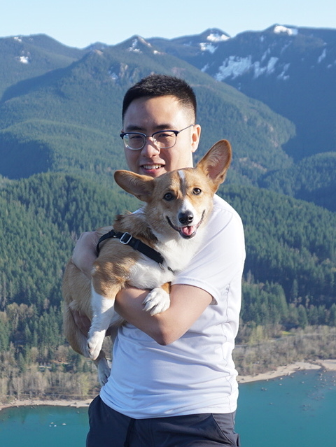
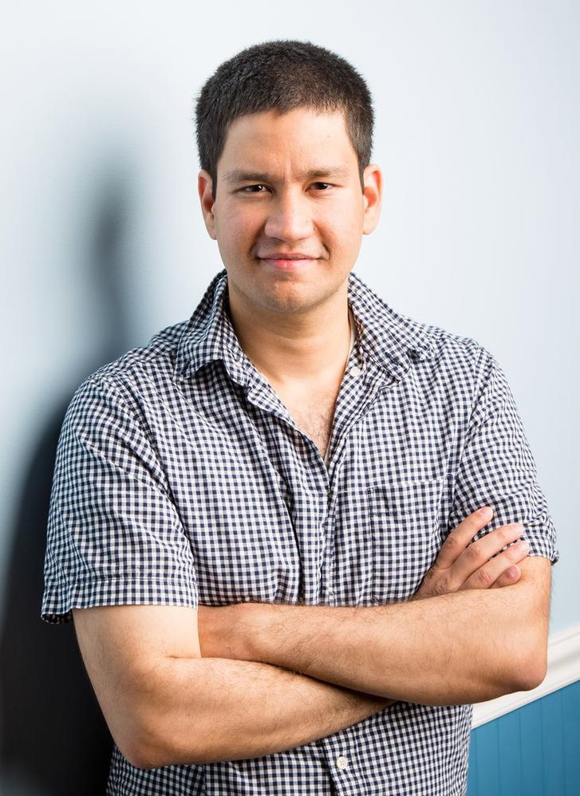

Timetable for the TrustML YSS online seminars from Mar. to Apr., 2022. Time (JST)Time (Your Browser)TitleSpeaker Video Link 17:15-18:15 10/03/2022 Beyond SGD: Efficient Learning with Non i.i.d. Data:Kfir Y. Levy (Technion) Video 10:00-11:00 17/03/2022 Controlling model behavior beyond the training data:Dimitris Tsipras (Standford University) Video 10:00-11:00 24/03/2022 Practical Individual Fairness:Mikhail Yurochkin (IBM Research) Video 11:00-12:00 24/03/2022 Robustness and Accuracy Could be Reconcilable: From Practice to Theory:Tianyu Pang (Tsinghua University & Sea AI Lab) Video 10:00-11:00 06/04/2022 Just How Toxic is Data Poisoning? A Unified Benchmark for Backdoor and Data Poisoning Attacks:Avi Schwarzschild (University of Maryland) Video 11:00-12:00 06/04/2022 Adversarial Training for Good:Chen Zhu (University of Maryland)  Video 10:00-11:00 14/04/2022 Adversarial purification with score-based generative model:Jongmin Yoon (KAIST) Video 11:00-12:00 14/04/2022 Towards Robust Representation Learning and Beyond:Cihang Xie (UCSC) Video 10:00-11:00 22/04/2022 Private measurement of nonlinear correlations between data hosted across multiple parties:Praneeth Vepakomma (MIT)  Video 11:00-12:00 22/04/2022 Advances and Perspectives of Transfer Learning:Ximei Wang (Tsinghua University) Video 11:00-12:00 26/04/2022 Is Sparsity a Good Friend of Robustness?Zhangyang “Atlas” Wang (University of Texas at Austin & Amazon Research) Video